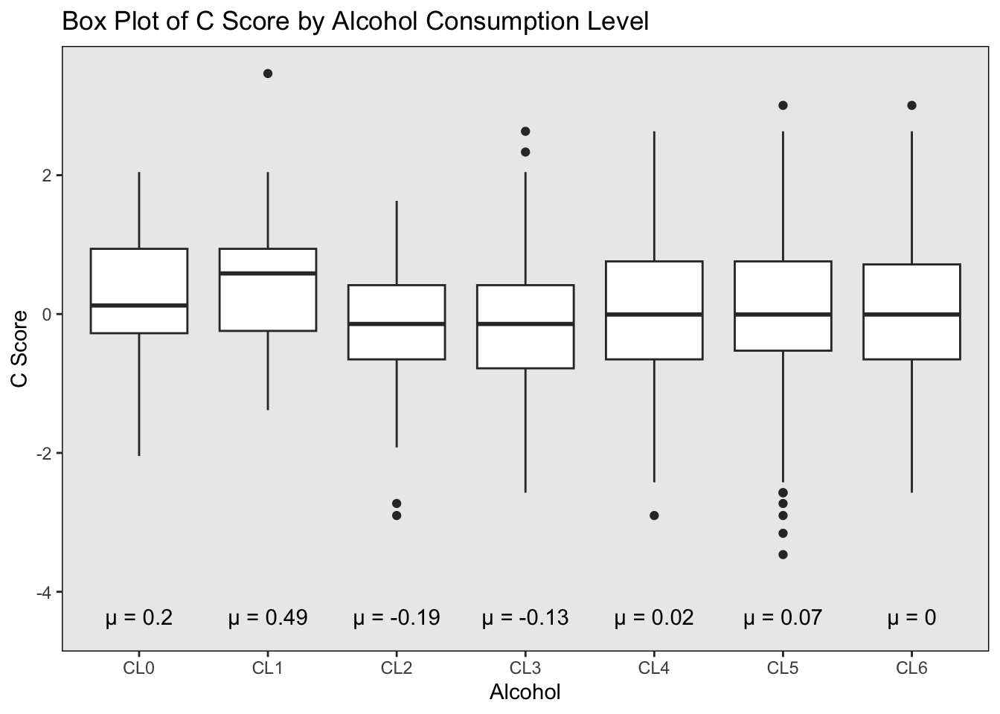
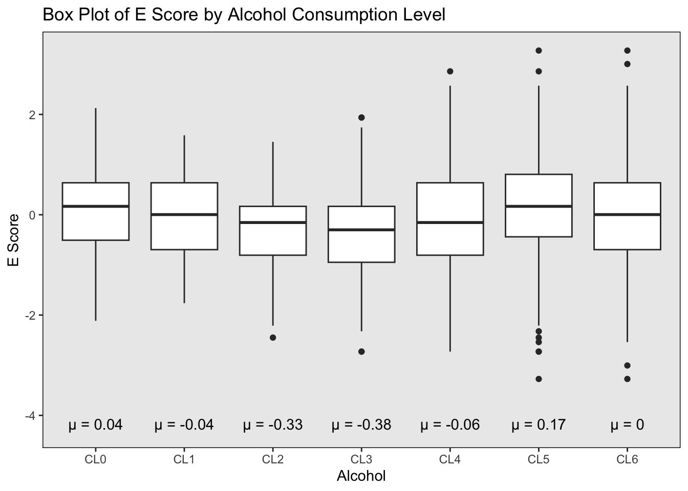
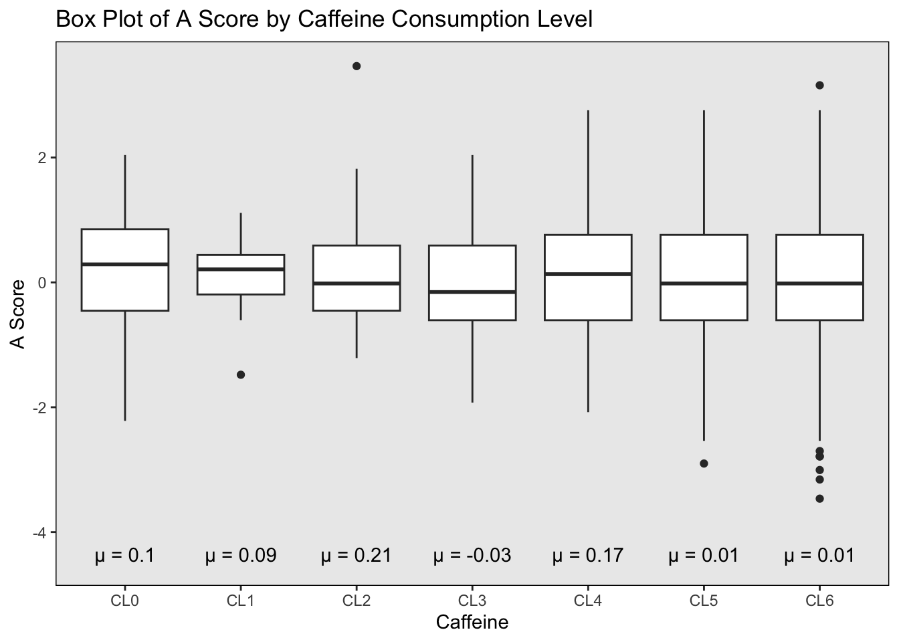
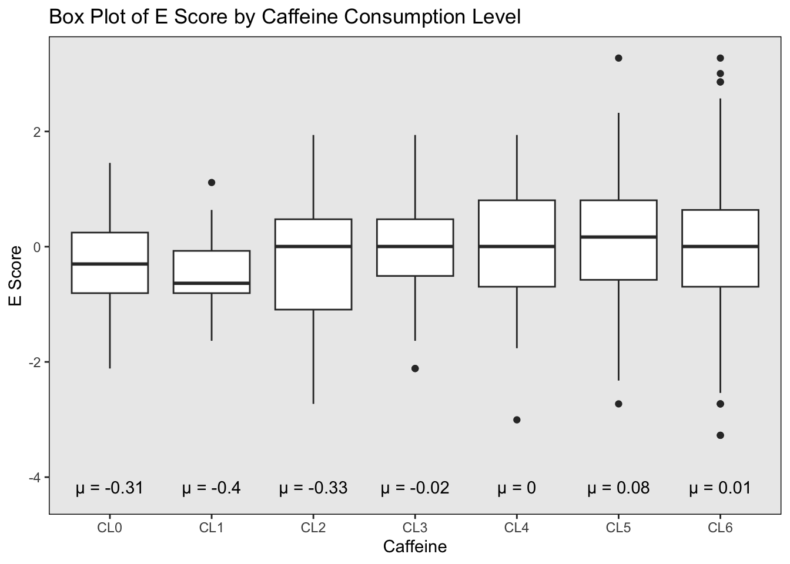
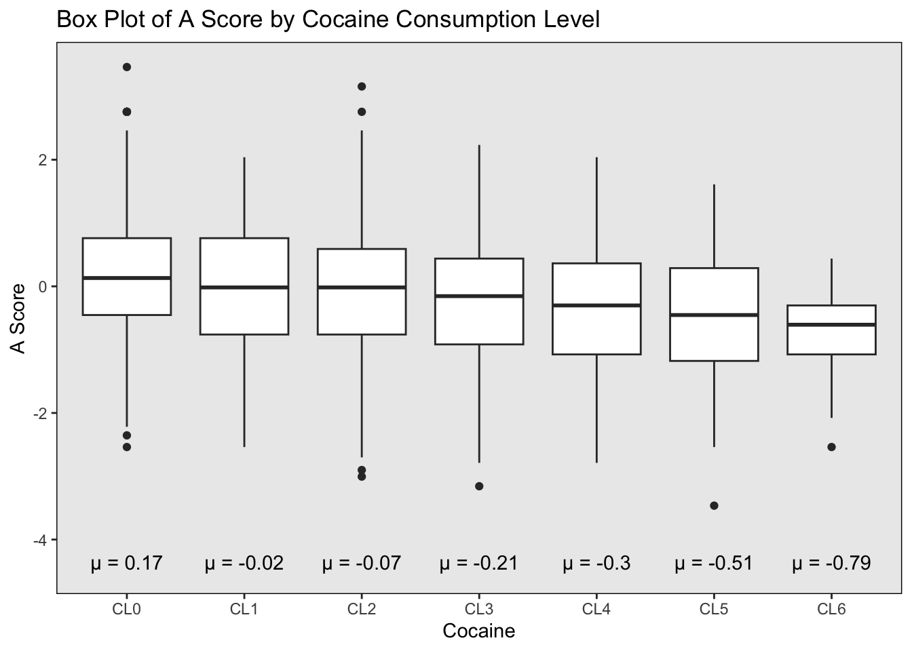
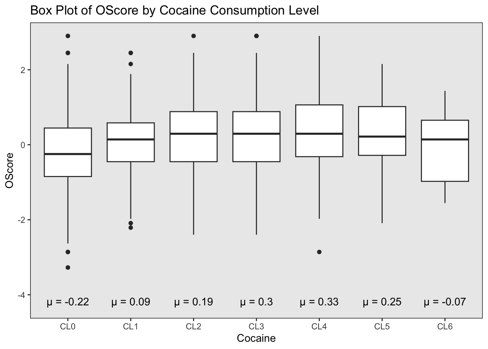

Psychological Traits [Box Plot Analysis]
How does personality affect the drug consumption patterns?
This page will present a box plot analysis examining the influence of scores obtained in five personality factors from the NEO-FFI-R questionnaire on patterns of drug consumption. The analyzed personality factors includeAgreeableness (A Score), Conscientiousness (C Score), Extraversion (E Score), Neuroticism (N Score), and Openness to Experience (O Score). A higher score indicates a greater likelihood of experiencing specific feelings within each respective category.
Legal Drugs
These three drugs (alcohol, caffine and nicotine) are legal in all 6 analyzed countries.
Alcohol
There is no strong relationship between alcohol consumption and the Agreeableness (A), Conscientiousness (C), Extraversion (E), Neuroticism (N), and Openness to Experience (O) scores. The data does not suggest any relationship between these personality traits and alcohol consumption.
A Score
The median C score values decrease slightly but not dramatically.
The interquartile ranges are generally similar across the levels.
These mean values fluctuate both above and below zero, with the highest mean observed in CL1 (μ = 0.35) and the lowest in CL2 (μ = -0.08).
There is a presence of more extreme outliers in CL3.
C Score
The median C score values within each level do not show a clear trend across the consumption levels of alcohol.
The interquartile ranges are relatively similar across all levels.
The mean C score values (μ) vary across the different levels of alcohol consumption, with the highest mean at CL1 (μ = 0.49) and the lowest mean at CL2 (μ = -0.19).
Outliers are present in several consumption levels, with CL5 having a notable cluster of outliers below the lower quartile.

E Score
Median values of E score across the levels do not show a uniform pattern of increase or decrease.
The interquartile ranges are relatively consistent.
Mean E score values are listed below each plot, showing some fluctuations, with the lowest mean at CL3 (μ = -0.38) and the highest at CL5 (μ = 0.17), but without a clear consistent trend correlating alcohol consumption levels with E score.
There are outliers present, particularly at CL5, where several individuals have significantly lower E score values than the median of the group.

N Score
The median N score values within each level do not display a clear or consistent trend with respect to alcohol consumption levels.
The interquartile ranges are relatively consistent across the levels.
Mean N score values are indicated with a notable increase to μ = 0.34 at CL2, followed by fluctuations. After CL2, the means do not show a consistent pattern, with μ = 0.09 at CL3, μ = 0.01 at CL4, dropping to μ = -0.08 at CL5, and increasing again to μ = 0.08 at CL6.
Outliers are present at higher consumption levels (CL4 to CL6).
O Score
The median O score values, seem relatively consistent across the different levels of alcohol consumption. There’s no clear upward or downward trend.
The interquartile ranges appear consistent across medium to higher consumption levels (CL3 to CL6), but it is wider in CL0 and narrower in CL1 and CL2.
The mean O score values exhibit slight variability but no apparent trend. They range from μ = -0.11 at CL0 to μ = 0.01 at CL6, with some fluctuation in between.
There are outliers present at almost all levels, except for CL4, but not significant overall.
Caffeine
Caffeine consumption does not exhibit a robust correlation with Agreeableness (A), Conscientiousness (C), and Neuroticism (N) scores. However, there may exist a modestly positive association between Extraversion (E) and Openness to Experience (O) with caffeine intake, suggesting that individuals who consume more caffeine might tend to be slightly more extraverted and open to new experiences.
A Score
The median A score appears relatively consistent across different levels of caffeine consumption, with no dramatic changes.
The interquartile ranges are fairly similar for each caffeine consumption level, except for CL1.
The means of A score for each level of caffeine consumption, indicated below the graph, are close to zero and do not show a clear increasing or decreasing trend. CL3 has a mean value (μ = -0.03) that is slightly negative, while the rest have positive mean values, though the differences are minimal.
There is a presence of multiple outliers in CL6.

C Score
The median values of C score within each level do not display a consistent increasing or decreasing trend across the levels.
The interquartile ranges and overall spread are relatively consistent across most levels, except too narrow CL1 and too wide CL2.
The mean C score values indicated below the graph show some fluctuation across the different levels of caffeine consumption, with the highest mean at CL0 (μ = 0.41) and a general lack of a clear trend across the other levels.
Outliers are present in several levels, with a noticeable concentration of lower outliers in CL6.

E Score
The median E score values tend to be consistent (close to zero) through these consumption levels, albeit with a notable drop at CL1.
The interquartile ranges are similar across most levels, except for narrower CL2 and CL4.
The mean E score values start at a negative value of μ = -0.31 at CL0 and fluctuate across the levels, peaking at μ = 0.08 at CL5. The mean E score values are negative at CL0 to CL4, but are positive at CL5 and CL6.
There are several outliers present, particularly at CL5 and CL6.

N Score
The median N score values across the different levels of caffeine consumption show a relatively consistent horizontal alignment within the boxes.
The interquartile ranges are fairly consistent across the levels, except for narrower CL1 and CL2.
Mean N score values start with μ = 0.11 at CL0. There is considerable variation, with a peak at μ = 0.16 at CL2, followed by a decrease and then slight increases towards CL6, which ends at μ = 0.01. There is no clear trend across the levels.
There are outliers at several levels, but are only more frequent in CL6.

O Score
The median O score values show some variation across the different levels of caffeine consumption. There’s a noticeable increase in the median O score from CL0 to CL2, followed by a slight decrease and then a plateau from CL3 to CL6.
The interquartile ranges fluctuated, without a pattern.
The mean O score values start at μ = -0.62 for CL0 and show fluctuations. There is a notable rise to μ = 0.03 by CL2, followed by a decrease to μ = -0.19 at CL3, and then a general increase to μ = 0.14 at CL4. The means then slightly decrease to μ = -0.04 by CL6.
Outliers are present at several consumption levels, but not significant.

Nicotine
Nicotine consumption may exhibit a negative correlation with Agreeableness (A) and Conscientiousness (C) scores, while showing a positive correlation with Neuroticism (N) and Openness to Experience (O) scores. Extraversion (E) scores seem to have no significant relevance. Thus, individuals who consume nicotine may tend to be less empathetic and composed, and more prone to stress, yet highly receptive to new experiences.
A Score
The median A score values within each consumption level do not show a clear increasing or decreasing trend, and there are no dramatic differences between the levels.
The interquartile ranges are relatively consistent across different nicotine consumption levels.
The mean A score values across nicotine consumption levels show some variability, with the highest mean at CL0 (μ = 0.23) and a general decrease as the consumption levels increase, with CL4, CL5, and CL6 all having negative mean values (μ = -0.11, -0.08, and -0.08, respectively).
There are outliers in multiple consumption levels, most notably in CL6.

C Score
The median C score values within each level shows a trend of decreasing.
The interquartile ranges appear fairly consistent across the levels, except for narrow CL3.
The mean C score values are indicated below the graph, with the highest means observed at CL0 (μ = 0.3) and CL1 (μ = 0.29), and a downward trend as nicotine consumption levels increase, ending with μ = -0.23 at CL6.
There are outliers observed at several levels, particularly at CL3 where there is a concentration of lower outliers.

E Score
The median E scores appear relatively stable across the different levels of caffeine consumption, without a pronounced increasing or decreasing pattern.
The interquartile ranges are quite similar across the levels.
Mean E score values are presented below each box plot, with some fluctuation across the levels. The means range from a low of μ = -0.13 at CL3 to a high of μ = 0.21 at CL5, but there is no clear trend across the levels.
There are outliers at several levels, but not significant.
N Score
The median N score values slightly increase across the different levels of nicotine consumption, but generally stable.
The interquartile ranges are similar across different levels.
Mean N score values start at μ = -0.18 for CL0 and end at μ = 0.17 for CL6. There is some variation in mean values across the levels, but there does not appear to be a clear trend.
There are outliers at various levels, especially lower outliers in CL5.
O Score
The median O score values show a upward trend across the levels of nicotine consumption, albeit it reaches its peak at CL4.
The interquartile ranges seem relatively consistent across the levels, with no significant increase or decrease in the spread of values.
The mean O score values start at μ = -0.32 for CL0 and generally increase to μ = 0.39 at CL4, then decrease to μ = 0.11 at CL6, but with positive mean O score values across higher consumption levels (CL3 to CL6).
There are outliers at several levels, notably at CL6.
Controversial Drugs
This drug (cannabis) is legal in two analyzed countries (the United States and Canada) but illegal in four others.
Cannabis
Cannabis consumption is inversely correlated with Agreeableness (A) and Conscientiousness (C) scores, yet positively correlated with Openness to Experience (O) scores. In terms of Neuroticism (N) scores, positive scores are more common among cannabis consumers, while negative scores prevail among non-consumers. Extraversion (E) scores appear to have little relevance in this context. Hence, individuals who consume cannabis tend to exhibit reduced empathy and composure, coupled with a heightened openness to experience. Furthermore, habitual cannabis consumption may be indicative of emotional instability.
A Score
The median values within each level appear stable, without sharp increases or decreases.
The interquartile ranges and overall data spread are relatively consistent across all levels, except for CL1 that is quite narrow.
The mean A score values (μ) show a decreasing trend from CL0 to CL6, with the highest mean at CL0 (μ = 0.27) and a general decrease in mean values as cannabis consumption levels increase, ending with a mean of μ = -0.14 at CL6.
Outliers are present in several levels, particularly in CL1 and CL6.
C Score
The median C score values also follow a generally decreasing trend, with the highest medians in the lower consumption levels and lower medians in the higher consumption levels, even though the lowest is in CL4.
The interquartile ranges show some variation across different levels but do not exhibit a clear pattern.
The mean C score values decrease as the levels of cannabis consumption increase, with a starting mean of μ = 0.47 at CL0 and decreasing to μ = -0.25 at CL6.
There are outliers present at most levels of consumption, with a particularly noticeable number of lower outliers in the lowest and highest consumption levels (CL0 and CL6).
E Score
The median E score values are stable within each level and do not show a clear pattern.
The interquartile ranges are narrower in CL0, CL1, and CL6, but wider in CL4, and CL5, without clear pattern.
The mean E score values have a slight fluctuation across the levels. The means begin at μ = 0.1 for CL0 and exhibit minor changes, reaching μ = 0 at CL6. There is no clear upward or downward trend in the means across the levels.
There are outliers, particularly at the lower end of the E score range at CL0 and CL6.
N Score
The median N score values demonstrate a gradual increasing trend with higher levels of cannabis consumption.
The interquartile ranges also show an increase with rising levels of cannabis consumption.
The mean N score values commence at μ = -0.2 for the lowest level of consumption (CL0). There is a pronounced rise to μ = 0.26 by CL3. Subsequently, the mean values experience a minor decline, stabilizing at μ = 0.08 for both CL5 and CL6, suggesting some fluctuations in the mean N score with varying levels of cannabis use.
Outliers are present at several levels of consumption, particularly noticeable as upper outliers in CL0 and CL1.

O Score
The medians increase from CL0 to CL6.
The interquartile ranges appear relatively consistent across different levels of consumption.
The mean O score values show a clear upward trend. Starting from μ = -0.61 at CL0, there is a steady increase in the mean values, culminating at μ = 0.48 at CL6.
There are outliers visible at several levels, but not significant.

Illegal Drugs
These two drugs (Cocaine, Heroin) are illegal across all six analyzed countries.
Cocaine
Cocaine consumption tends to exhibit a specific pattern, particularly when excluding individuals who are extremely addicted to its use (CL6). In this scenario, consumption is negatively correlated with Agreeableness (A) and Conscientiousness (C) scores, while showing a positive correlation with Neuroticism (N) and Openness to Experience (O) scores. Extraversion (E) scores do not seem to bear relevance in this context. Consequently, those who consume higher amounts of cocaine may display reduced empathy and composure, alongside heightened stress levels, but they tend to have more openness to new experiences.
A Score
The median values have a trend of decreasing.
The interquartile ranges are fairly consistent, except for CL6, where it is narrower.
The mean A score values display a noticeable decreasing trend as cocaine consumption levels increase, with the highest mean at CL0 (μ = 0.17) and a significant decrease to the lowest mean at CL6 (μ = -0.79).
There is a presence of outliers in several levels, especially in CL0 and CL2.

C Score
The median C score values across the consumption levels appear to generally decline as cocaine consumption levels increase, which is consistent with the reduction in mean values, except for CL6, which increases suddenly to have the highest median.
The interquartile ranges show some variation but do not indicate a clear pattern of increasing or decreasing variability with higher consumption levels.
The mean C score values with the initial mean at CL0 being μ = 0.21. As the levels of cocaine consumption increase, there is a general downward trend in mean values, reaching μ = -0.45 at CL5 before slightly increasing to μ = -0.02 at CL6.
There is a significant presence of outliers at several consumption levels, with CL1 and CL3 having a number of lower outliers that stand out.

E Score
The median E score values do not exhibit a clear increasing or decreasing trend in relation to the levels of cocaine consumption. Instead, the medians fluctuate from level to level.
The interquartile ranges are extremely wide in CL4 and CL5.
Mean E score values have significant fluctuations across the levels. The means start at μ = 0.03 for CL0 and show variations, peaking at μ = 0.33 at CL5 before dipping slightly to μ = 0.04 at CL6.
Outliers are present at CL0 and CL2.
N Score
The median N score values show a gradual uptrend as the levels of cocaine consumption increase.
The interquartile ranges seem to be fairly consistent across the consumption levels, without a clear trend of increasing or decreasing variability.
Mean N score values have a noticeable upward trend from μ = -0.11 at CL0 to μ = 0.36 at CL6.
Outliers are present across several levels, particularly at the lower consumption levels (CL0).
O Score
The median O score values appear to increase slightly across CL0 to CL5, but decrease slightly when it comes to CL6.
The interquartile ranges appear fairly consistent across CL0 to CL5, but become wider in CL6.
The mean O score values start at μ = -0.22 for CL0 with some increases across the levels, reaching a peak at μ = 0.33 for CL4 and keep positive for CL5, then decreasing to μ = -0.07 at CL6.
There are outliers at multiple levels, but not significant.

Heroin
Heroin consumption exhibits negative correlations with Agreeableness (A) and Extraversion (E) scores, while displaying a positive correlation with Neuroticism (N) scores. When excluding individuals who are extremely addicted (CL6), heroin consumption is additionally negatively correlated with Conscientiousness (C) scores and positively correlated with Openness to Experience (O) scores. Therefore, when accounting for extreme addiction, the overall profile of heroin consumers tends to be less empathetic, less introverted, and more emotionally unstable. Excluding extreme consumers, those who consume heroin are characterized by reduced calmness yet increased openness to new experiences.
A Score
The median values of A score within each consumption level do not follow a uniform pattern but do generally decrease with higher levels of consumption.
The interquartile ranges remain relatively consistent across CL0 to CL3, but the range expands significantly at CL4 and narrows slightly at higher levels (CL5 and CL6).
The mean A score values show a substantial decreasing trend as heroin consumption levels increase, starting from a mean of μ = 0.09 at CL0 and descending to μ = -0.92 at CL6.
There are outliers in several levels, notably at CL0, and CL2.
C Score
The median C score values within each level seem to follow a downward trend, except for CL6.
The interquartile ranges appear relatively similar across most levels, although they are slightly narrower at CL2.
Mean C score values highlight a trend where the mean decreases as heroin consumption levels increase, starting from a mean of μ = 0.1 at CL0 and dropping to μ = -0.65 at CL5, but slightly increase to μ = -0.6 at CL6.
There are outliers present at several levels, particularly in the lower score range CL0.

E Score
The median E score values within each level generally show a decrease as the heroin consumption level increases, although this is not a strictly linear decline.
The interquartile ranges show that the variability within each group is relatively consistent across all levels, with no significant increase or decrease in spread as heroin consumption changes.
Mean E score values follow a similar trend as the median. Starting at μ = 0.04 for CL0, there is a trend of decline in the mean values as the levels of heroin consumption increase, with the lowest mean at μ = -0.7 for CL6.
There are outliers present at multiple levels, especially at CL0.

N Score
The median N score values display a general increasing trend as the levels of heroin consumption rise.
The interquartile ranges appear to remain relatively consistent across the consumption levels through CL0, CL2, CL3, and CL4. It is wider at CL1 and narrower at CL5 and CL6.
The mean N score values exhibit a clear upward trend from μ = -0.07 at the lowest consumption level (CL0) to μ = 1.02 at the highest level (CL6), indicating an increase in mean N score values with higher levels of heroin consumption.
There are outliers present at various levels, particularly at the lower levels (CL0).

O Score
The median O score values exhibit an increasing trend from CL0 to CL2. However, the median values drop at CL6.
The interquartile ranges seem consistent across CL0, CL1, CL3, and CL5. However, it is narrower in CL2 and CL4, wider in CL6.
The mean O score values show an initial increase from μ = -0.09 at CL0 to μ = 0.51 at CL2, followed by a slight decrease and then stabilization around μ = 0.30 for CL5 and μ = 0.26 for CL6.
Outliers are present at various consumption levels, particularly CL2.